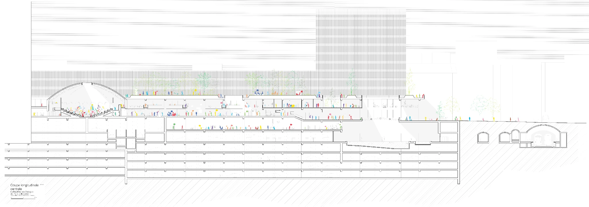

A research and creative practice
ARTIFICE
The worlds we inherited are still here.
Some places are so ordinary
we forget to look at them.
Yesterday's visions of tomorrow became our everyday life.
Shopping centres, new towns, towers, leisure complexes. Built to promise comfort, prosperity and progress. Still inhabited, repurposed, emptied or erased.
ARTIFICE studies how these worlds were made, what remains of them, and what other futures they might hold.
Why ARTIFICE existsPlaces worth
looking at twice.
Not a catalogue of ruins. An evolving collection of architectures, whether thriving, changing or disappearing.
THE INVENTORY IS OPEN AND GROWINGExplore all places
FIELDWORK BECOMES MATERIAL
A place can become
a film.
a sound.
a book.
another place.

We work through drawings, scans, archives, photography, moving images, sound and architectural experiments. Each medium makes a different part of a place visible.
View selected worksResearch. Documentation. Images. Sound. Transformation.